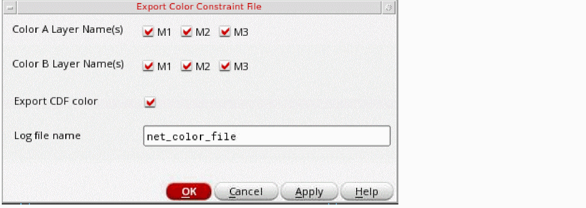
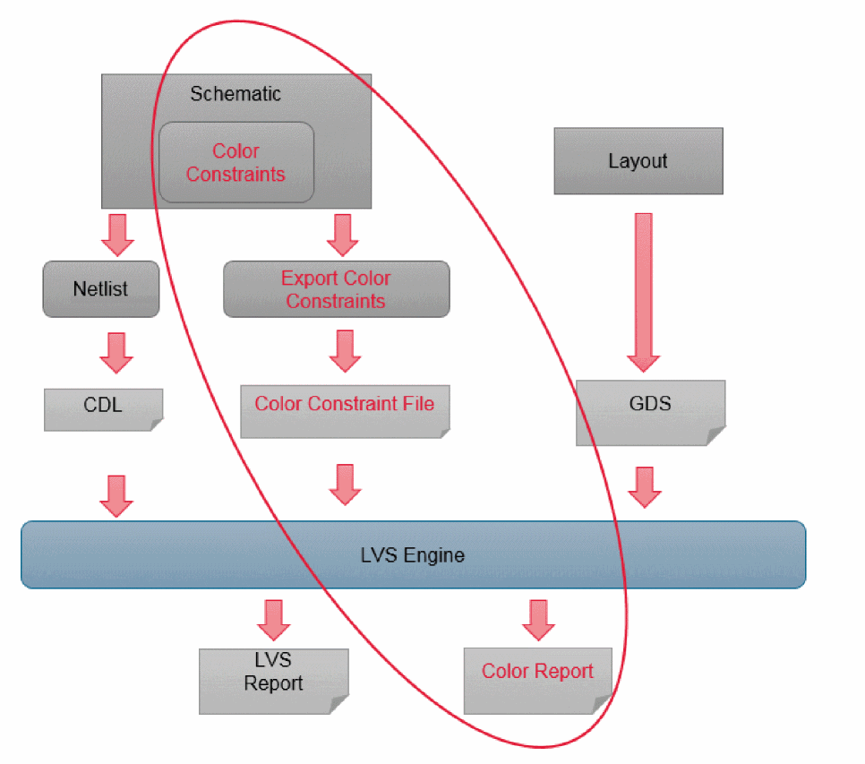

LVS Coloring Check
You can use Layout Versus Schematic (LVS) color checking to verify color assignments. You must generate the color constraint file to perform LVS coloring check. This file contains color information and is specified as an additional input to the LVS application.
To verify color assignment using LVS:
-
Choose File – Export Color Constraint File in the schematic view.
The Export Color Constraint File form appears.
 -
Select the Color A Layer Name(s), Color B Layer Name(s), and Export CDF color options on the Export Color Constraint File form. Also, type the Log file name.You can specify the values in the Color A Layer Name(s), Color B Layer Name(s), and Log file name fields using the environment variables, colorConstFileColorAName
, colorConstFileColorBName, colorCDFCheck, and colorConstFileName.
The figure below displays the LVS-based coloring check flow.

Related Topics
Methods to Check Multiple Patterning Violations
Methods to Fix Multiple Patterning Violations
Checking CDF Color and Net Color Constraint
Return to top